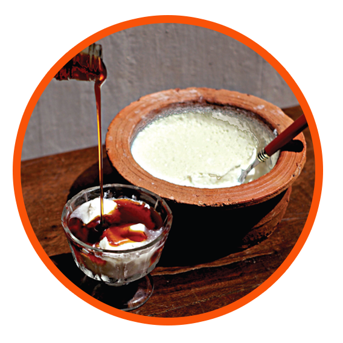

நுண்ணங்கிகள், பதனிட்ட பாலிலுள்ள (லக்ரோபசிலஸ் பல்காரிகஸ், ஸ்ரெப்டோகொகஸ். தேர்மோபிலஸ் - டுயஉவழடியஉடைடரள டிரடபயசiஉரளஇளுவசநிவழஉழெஉரள வாநசஅழிhடைரள) லக்ரோஸை சமிபாடடைய வைத்து அவற்றின் அளவை அவ்வுணவிலிருந்து குறைக்கும்.
புரொபயொடிக் யோகட் (Pசழடிழைவiஉ லுழபாரசவ) சாதரண யோகட் வகைகளிலும் வித்தியாசமானது. இதில் இருக்கும் பெருமளவு பற்றீரியாக்கள் (106 உயிருள்ள பற்றீரியாக்கள்ஃப) நன்மை தரும். புரொபயொடிக் பற்றீரியா (பிபைடோபற்றீரியம் பிபிடம், பிபைடோபற்றீரியம் லொங்கம், லக்ரோபசிலஸ் அசிடோபிளஸ், லக்ரோபசிலஸ் கோசியய் என்பன –டீகைனைழடியஉவநசரைஅ டிகைனைரஅஇ டீகைனைழடியஉவநசரைஅ டழபெரஅஇ டுயஉவழடியஉடைடரள யஉனைழிhடைரளஇ டுயஉவழடியஉடைடரள உயளநi நவஉ.) நன்மை பயக்கும